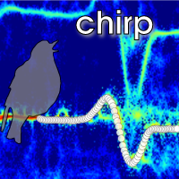
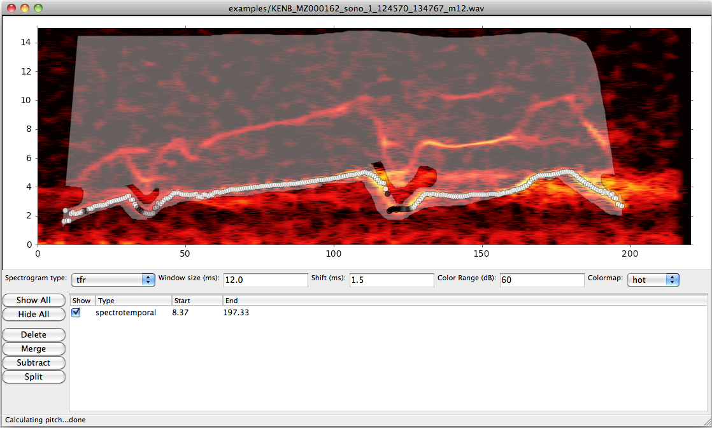

Pitch and spectral analysis and comparison of bioacoustic signals

Chirp is a suite of software for analyzing and comparing bioacoustic signals. It consists of the following semi-independent components:
A graphical interface for viewing conventional and time-frequency reassignment spectrograms.
An advanced signal processing algorithm for tracking the pitch (fundamental frequency) of tonal signals. Designed for use with noisy field recordings.
A dynamic time-warping algorithm for quantitatively comparing the spectrograms and pitch traces of signals. Supports batch processing on multicore machines for large datasets.
Plugin architecture supporting additional algorithms for comparing signals (currently includes spectrographic cross-correlation)
The current version of chirp is 1.2.0